Denoising diffusion models have demonstrated outstanding results in 2D image generation, yet it remains a challenge to replicate its success in 3D shape generation. In this paper, we propose leveraging multi-view depth, which represents complex 3D shapes in a 2D data format that is easy to denoise. We pair this representation with a diffusion model, MVDD, that is capable of generating high-quality dense point clouds with 20K+ points with fine-grained de- tails. To enforce 3D consistency in multi-view depth, we introduce an epipolar line segment attention that conditions the denoising step for a view on its neighboring views. Additionally, a depth fusion module is incorporated into diffusion steps to further ensure the alignment of depth maps. When augmented with surface reconstruction, MVDD can also produce high-quality 3D meshes. Furthermore, MVDD stands out in other tasks such as depth completion, and can serve as a 3D prior, significantly boosting many downstream tasks, such as GAN inversion. State-of-the-art results from extensive experiments demonstrate MVDD’s excellent ability in 3D shape generation, depth completion, and its potential as a 3D prior for downstream tasks.


 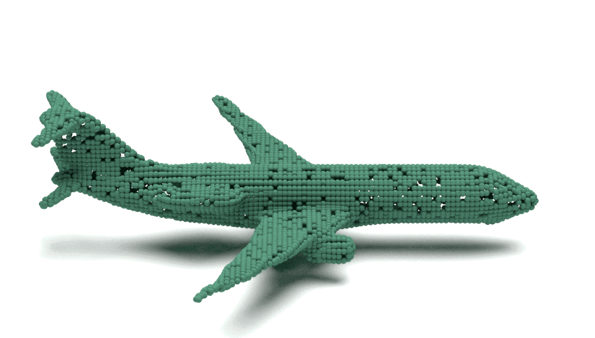
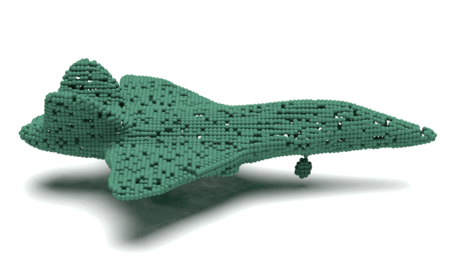
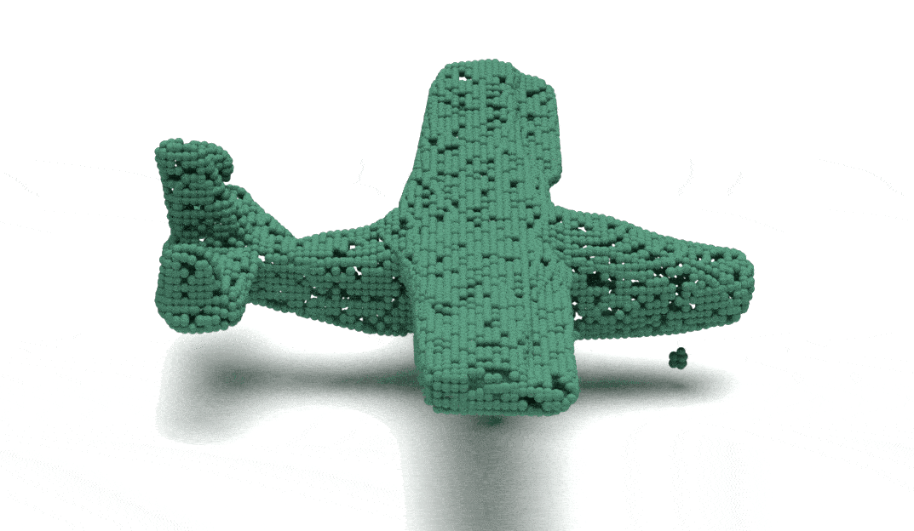
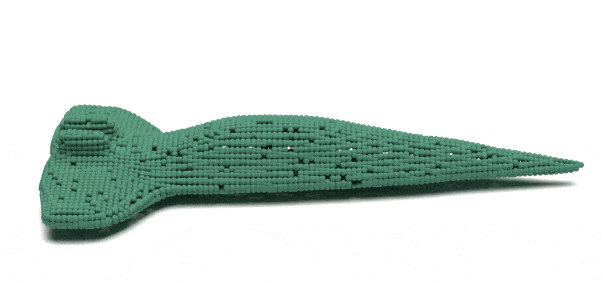
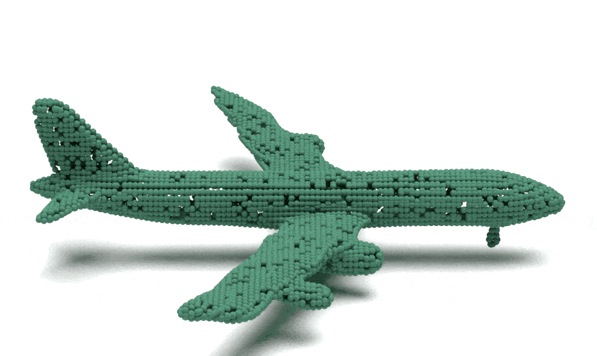
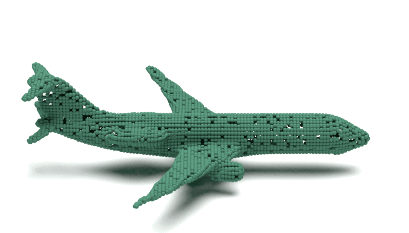
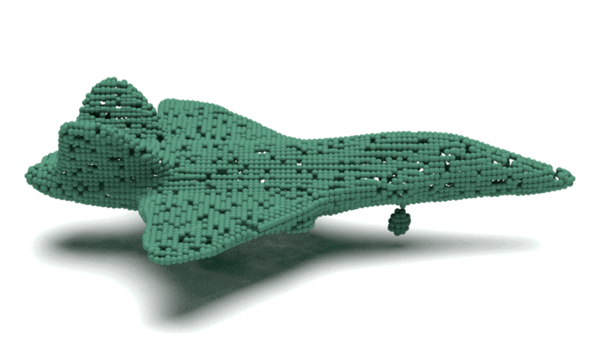
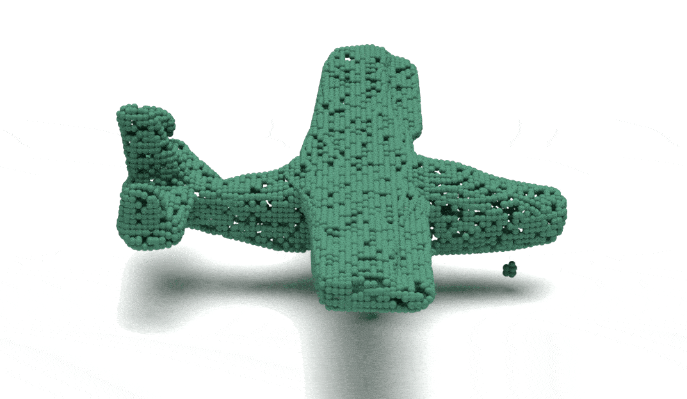
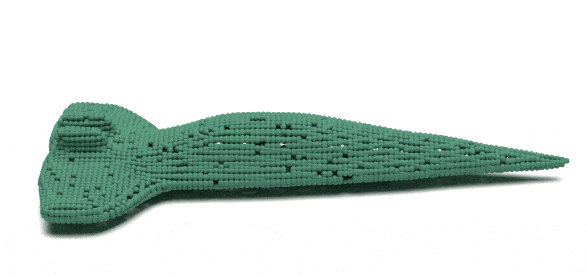
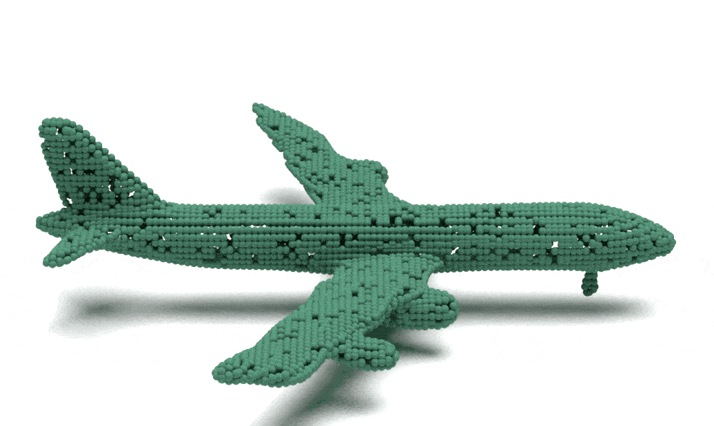
Our model augmented with surface reconstruction method SAP
Top: PVD (Zhou et al.); Bottom: LION (Zeng et al.)

 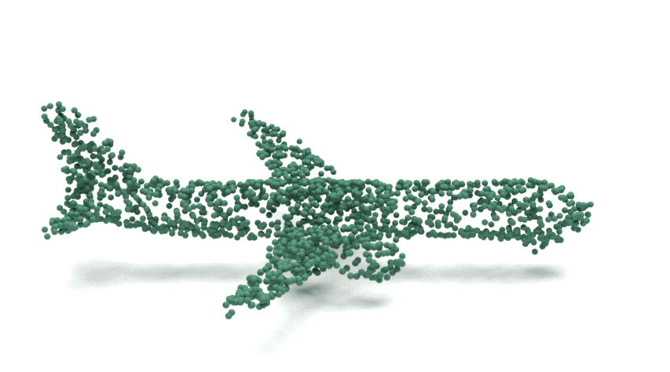
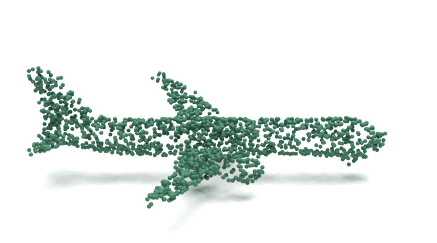

 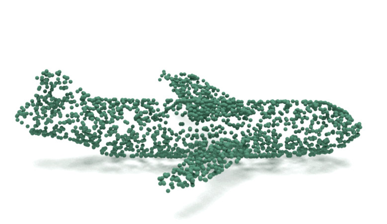
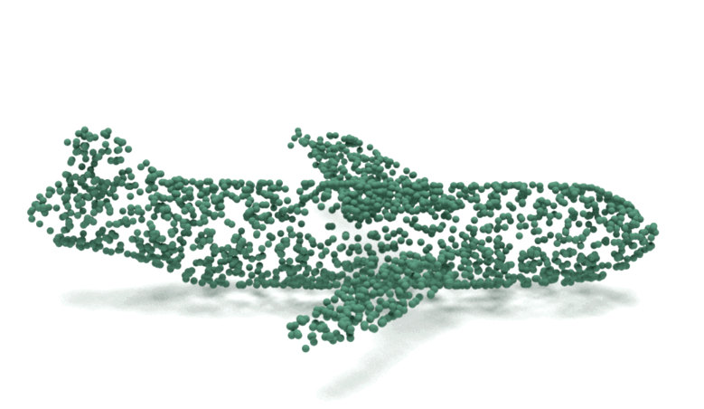


@article{wang2023mvdd,
author = {Zhen Wang, Qiangeng Xu, Feitong Tan, Menglei Chai, Shichen Liu, Rohit Pandey, Sean Fanello, Achuta Kadambi, Yinda Zhang},
title = {MVDD: Multi-View Depth Diffusion Models},
journal = {arXiv},
year = {2023},
}